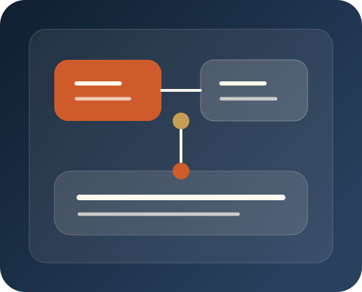

What is included
Phase 1 — Workflow Blueprint
$10,000
- Choose the workflow.
- Map the current state.
- Identify the bottlenecks and risks.
- Define the future-state design.
- Set the success measure.
- Create the implementation plan.
45-Day Workflow Pilot
The 45-Day Workflow Pilot is the simplest way to start with FlexGCC. We identify one high-value workflow, redesign it, build it, launch it, and train the team.

What is included
$10,000
Delivery
$15,000
What success looks like
What makes a good pilot candidate
Economics
Time saved, faster turnaround, less manual effort, better reliability, or capacity released.
FAQ
Yes. That is part of the offer.
Yes. We may additionally recommend certain tools to help with automation. Examples include ChatGPT, n8n, and similar low-cost tools.
We narrow the scope or recommend suitable start and end points.
You keep the live workflow, documentation, and training. We expect you will likely want us to tackle the next high impact workflow.